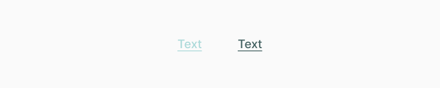

Text Button
Кнопки передают действия, которые пользователи могут применять. В целом, функционал такой же как и у обычных кнопок, за исключением их стилей. Прочитать подробнее о button.
Реализация
Выше мы уже сказали, что подробную функциональность и применение кнопок можно изучить в туториале button. Ниже мы покажем стили текстовых кнопок. Можешь посмотреть получившийся text button.
.A_TextButton {
position: relative;
padding: 14px 20px;
border-radius: 10px;
font-size: 20px;
font-weight: 500;
color: #426060;
cursor: pointer;
user-select: none;
text-decoration: underline;
}
.A_TextButton:hover {
color: #5be7e7;
}
.A_TextButton.disabled {
color: #abd9d9;
cursor: default;
}Получаем следующий результат:
Составляющие
Этот компонент часто выводится в следующих компонентах